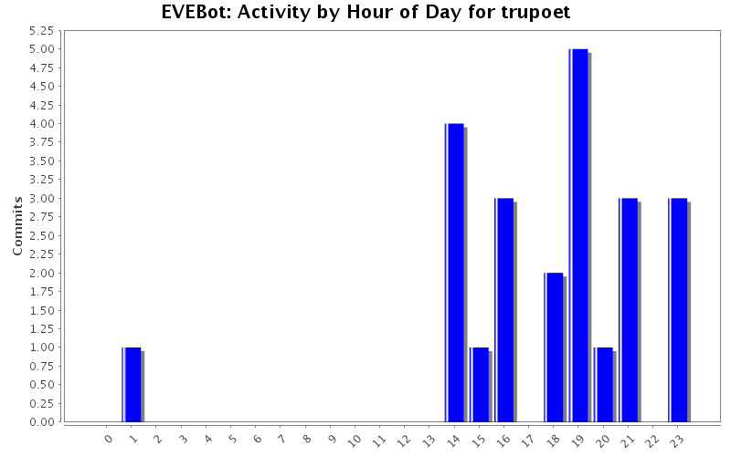
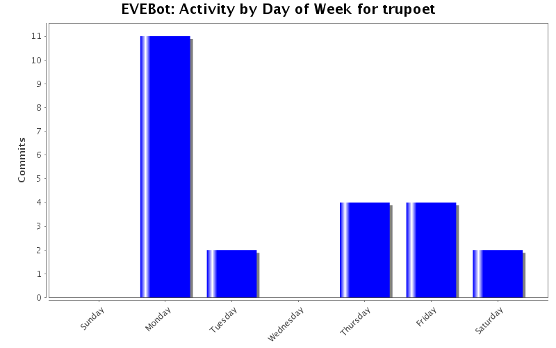
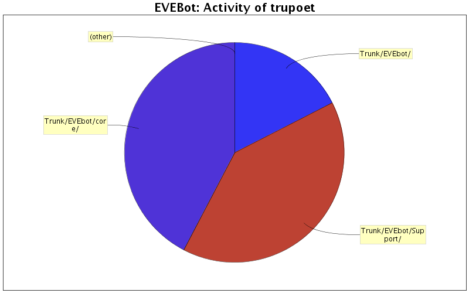

| Directory | Changes | Lines of Code | Lines per Change |
|---|---|---|---|
| Totals | 23 (100.0%) | 600 (100.0%) | 26.0 |
| Trunk/EVEbot/core/ | 13 (56.5%) | 254 (42.3%) | 19.5 |
| Trunk/EVEbot/Support/ | 7 (30.4%) | 241 (40.2%) | 34.4 |
| Trunk/EVEbot/ | 3 (13.0%) | 105 (17.5%) | 35.0 |

updated login handler to keep trying to hit the connect button if it's still at the login screen
7 lines of code changed in 1 file:
Changed login handler to automatically resume evebot after 30 seconds
a hack to evebot is no longer required
7 lines of code changed in 1 file:
fixed Login Handler timer
1 lines of code changed in 1 file:
Update to the launcher
Also see the wiki for how to setup Autologin using the launcher
37 lines of code changed in 3 files:
Changed MIN_CRYSTALS to # of lasers + 1 for worst case scenario
1 lines of code changed in 1 file:
fixed a bug where 1 more crystal than was needed was getting added sometimes
1 lines of code changed in 1 file:
Crystal Replenishment code now takes active mining crystals into account
56 lines of code changed in 3 files:
Added new functionality for automatically replenishing crystals
Currently the amount of crystals is just a hardcoded variable in the function ReplenishCrystals() called MIN_CRYSTALS and is set to 5.
I'm sure Cyber and/or Glider will want to set this up as a config variable instead
Currently this functionality only works if you have crystals in your ship's cargo
Example: If you run out of a veldspar crystal even though you have some on the laser being used, it will no longer look for these
TODO: Before docking, count the crystals that are in use as well to fix this
114 lines of code changed in 2 files:
fixed Instation to InStation
1 lines of code changed in 1 file:
Fixed a bug that made EVEbot pause when docking and trying to check for buddies at the same time
3 lines of code changed in 1 file:
Pure Refactoring Change
Moved stackAll() and checkBuddy code from obj_Miner to obj_EVEBot
as per Cyber's request
37 lines of code changed in 2 files:
Added a stackAll() function to Ship object (checks if cargo is open first)
Added some functionality to Miner such that it will both StackAll() and try to check a buddy's status every minute or so to try to keep connected.
These 2 things seemed to help with most "client disconnect but not knowing it" problems but it still happens once in a while
41 lines of code changed in 2 files:
First release of working Launcher (Autologin) code
For now, everything assumes you have filled out the config file manually (rename launcher_config_example.xml to launcher_config.xml and fill it out)
To get your CharID, when in the game and at the Innerspace console, execute: echo ${Me.CharID}
TODO: (and in progress)
* Implement a GUI for interfacing with the config file
294 lines of code changed in 4 files: